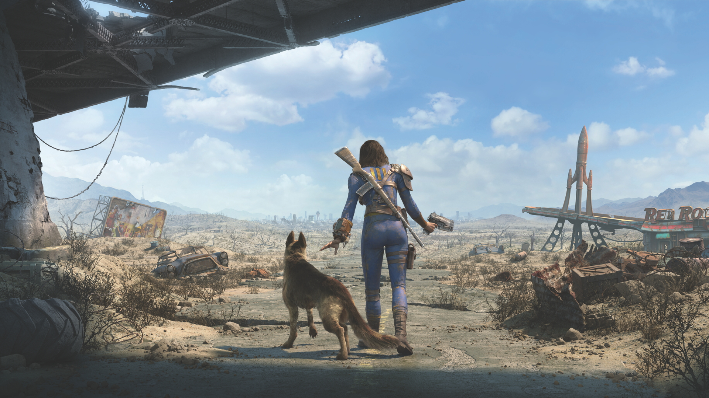

Disruptive Technology - Video Games
Video Games
Nowadays video games are a very popular media, accessible across the entire world and reaching the lives of thousands every single day.
How Are Video Games A Disruptive Technology
Disruptive technology is often roughly defined as the following: An innovation or technology that greatly changed the way that consumers, industries, or businesses operate. Video games, as a technology and a media, fit this bill to a tee. Video games touch touch so many lives on any given day and they hold the power to change the lives of those who play them. Video games also have changed the world's industries through gamification (though gamification existed prior to the invention of video games, their invention changed the ways people could go about it).
Types Of Video Games
There are hundreds of different kinds of video games in the world.
-

Fallout 4
Role Playing Game
-
Detroit Become Human
Narrative Game
-
Mario Kart
Racing Game
-

Madden
Sports Game
-

Elden Ring
Action Game
-
Street Fighter
Fighting Game
-

Valorant
First Person Shooter Game
-

World of Warcraft
Puzzle And Strategy Game
Role-Playing Games (RPGs)
RPGs or “Role-Playing Games” are games where the player interacts with imaginary characters and the world they live in. These types of games usually have the player go on some kind of adventure, journeying through a new make believe setting with strange creatures and characters. Some examples of RPG games are, Pokemon, Skyrim, Fallout, Final Fantasy
Narrative
A narrative game usually revolves around a central story and character moments, rather than focusing on other elements of games such as fighting mechanics or puzzle solving. While most games do have a story of some kind, these types of games focus mainly on the story, often as a kind of choose your own adventure where the player decides how the story goes. Some examples of games like this would be Until Dawn, The Last of Us, The Walking Dead, Detroit become human, and many more. These types of games are perfect for those who love good character moments and a slower, story centered gameplay experience.
Racing
Racing games are where you take control of a vehicle or character and race to a designated goal. These games can often have you racing alongside, against, or even from different people, so speed is key. Some examples are, Forza, Mario Kart, Need for Speed, Gran Turismo.
Sports
Sports games usually have you take control of a sports team real or made up to win whatever sport is being played. Some sports games even let you create and build your own team from the ground up to see how they would do against a real team. Some examples might include Madden, Fifa, NBA 2k.
Action Games
Action Games are a type of game where there is always something going on. Whether this is achieved through long shoot outs or fight scenes, they usually have a rich story while keeping the player engaged with the gameplay. Some examples of this are, Elden Ring, Metal Gear, Devil May Cry.
Fighting
Fighting games usually involve a one v one between two players. These games more often than not have the player input certain special moves and attacks to create combos to beat their opponents. There are often a few different kinds of fighting styles in each game, from ranged characters, to brawlers, to up close grapplers, there’s a fighting style for every player. Beat em ups can also be considered fighting games. Some examples include, Street Fighter, Dragon Ball Fighterz, TMNT Turtles in time, and Guilty Gear Strive.
First Person Shooter (FPS)
FPS or “First Person Shooter” are some of the most popular games in today's age. While the term FPS refers to shooters, not all FPS games are shooters. Some games are from a first person perspective and don't have any shooter qualities. Some games include, Call of Duty, Valorant, Amnesia, Portal.
Puzzle/Strategy
Puzzle games keep the mind thinking. These types of games get the gears turning in your head on how to solve a puzzle, whether this be a point and click game, digital escape room, or a war game, this type of game more often than not requires memorization and problem solving. Strategy games are similar but instead of solving a puzzle it makes the mind think of a plan to execute to win a fight or something similar. Some examples include, XCOM, Civilization, World of Warcraft.
Places To Find These Games
There are many places to find games of all these generes, but some of the most popular places are the following platform stores: